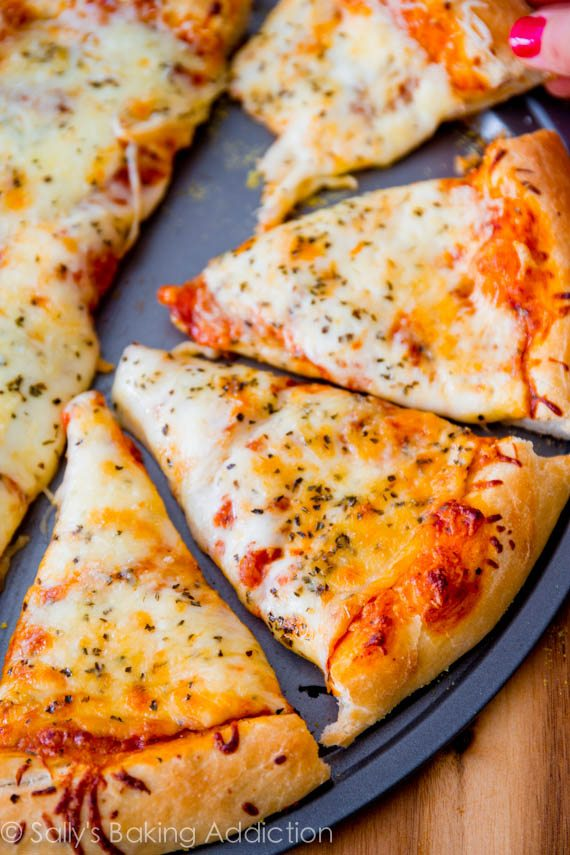

Homemade Extra Cheese Pizza

The Best Homemade Cheese Pizza!
Description
My husband's favorite food is pizza. He likes it plain and simple. A lot of cheese. Sometimes Hawaiian, sometimes BBQ chicken. But most of the time: extra cheese.
I, on the other hand, am all about the extras. I like my pizza with fun (weird?) toppings like roasted eggplant, goat cheese, sun dried tomatoes, figs, butternut squash, and honey.
But one thing we can agree on: really good crust. Puffy, chewy, and thick pizza crust.
Ingredients
- 1/2 recipe homemade pizza crust
- 1/2-3/4 cup (127-190g) pizza sauce, depending how much you like (homemade or store-bought)
- 8 ounces sliced mozzarella cheese
- 1 and 1/2 cups (6oz or 168g) shredded mozzarella cheese
- 2-3 Tablespoons (10-15g) grated parmesan cheese
- ground basil or Italian seasoning, to taste
Steps
- Prepare the pizza dough through step 6, including preheating the oven to 475°F (246°C) as described in step 4
- Top the dough with the pizza sauce, then the sliced mozzarella, then the shredded mozzarella, grated Parmesan, then sprinkle with basil
- Bake for 12-15 minutes
- Slice hot pizza and serve immediately. Cover leftover pizza tightly and store in the refridgerator